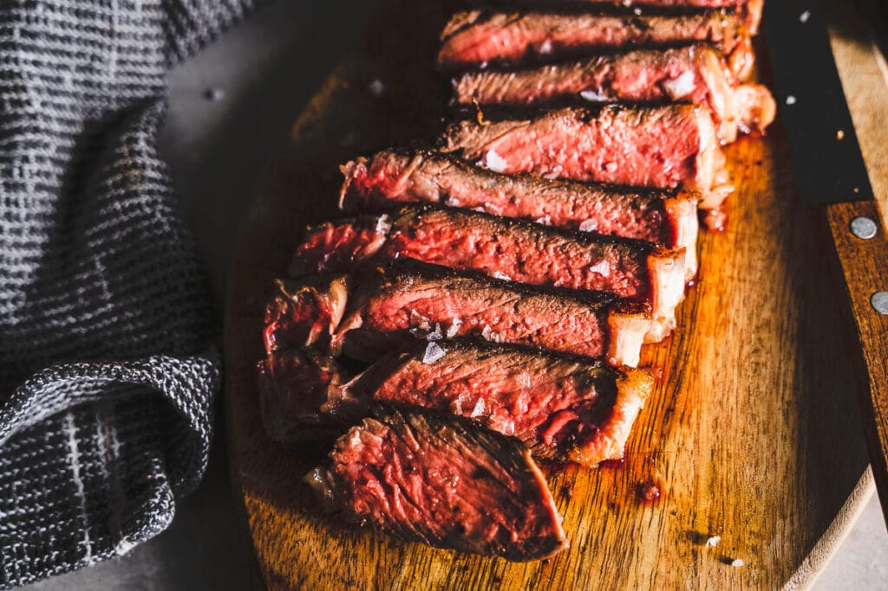

Pan Seared Steak

Description
This pan seared steak has a garlic rosemary-infused butter that makes it taste steakhouse quality.
You'll be impressed at how easy it is to make the perfect steak - seared and carmelized on the outside, and juicy inside.
This 20-minute recipe is done on the stovetop in one pan.
This quick and convenient recipe creates a delicious steak dinenr for the entire family.
Ingredients
- 2 pounds New York Strip steaks
- 1/2 tablespoon vegetable oil
- 1 1/2 teaspoon sea salt
- 1 teaspoon freshly ground black pepper
- 2 cloves garlic, peeled and quartered
- 1 sprig fresh rosemary
Directions
- Thoroughly pat steak dry with paper towels. Generously season with salt and pepper
- Heat cast iron pan until hot then add oil over medium-high heat, swirl to coat. Once oil is very hot, add steak to pan. Sear steak on the first side for 4 minutes until a brown crust has formed, flip and cook for another 3-4 minutes. Turn steak on sides to render fat cap, sear edges.
- Reduce heat to medium and immediately add butter, garlic, and rosemary to pan. Spoon butter over the steak. Continue spooning butter over the steak for a minute until the steak is about 5-10 degrees from you desired doneness.
- Transfer steak to a cutting board, loosely cover and rest for 10 minutes. Cut and serve.